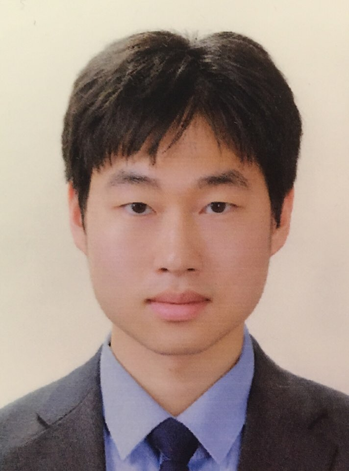
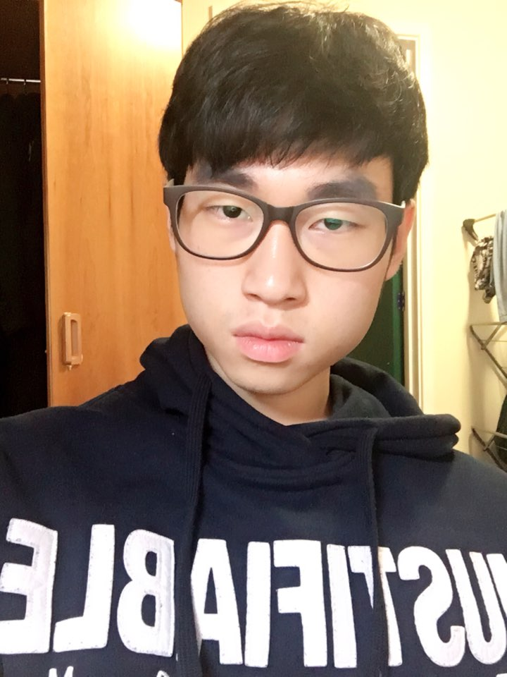

He is the first founder of this web page. He was a student of the university of stanford. The first motivation of his making this website was because
his first assignment was making a website for kids. After fininshing the assignment, he decided to make a website for kids. He started to think about
what is the most possibly interest thing for kids without losing educational points. And then, he decided to make puzzle games for the website.
With the experience of programming his university, he devised overall mock-ups for this webpage and started to make the webpage. He could deal with
writing programming codes, but he was not good at drawing pictures. Hence, he invited a person who was one of his coursemates to get help for drawing pictures.
And he also need one more person who can look through what he has made. Whith his two mates, he made this web page. IT has taken 2 months to make this webpage.
At the first time, the progress spees was slow, but it has been faster since all the members were gettign to used to it. He playes main role in building this webpage.
He is trying to make upgrade version of this webpage which includes more diverse puzzlegames and more interesting and educational stuff which can help kids grow better.

Founder 2: HAMMEL NAM
He was one of Hyun's coursemate. They were quite close when they were a student of the university. Hyun was much more better at programming the code, but hammel
was really good at drawing. Everytime they have gotten assignments related to programming from the university, they got very high score. Hyun got it because of
of his high quality of programming and hammel was because of drawing and decorating ability was great. With his great ability of drawing and decorating, he was
invited to hyun's project which is the making the website. He delightly joined to the project. Although the overall structure of the webpage was devised by Hyun,
hammel introduce quite good locations for images and actually has drawn them. In addition, he gave quite good ideas of decorating the webpage. At the first few images
are rejected from the hyun, because they did not fit to the oveall atmosphere of the webpage. However, after he recognizing the overall air of the website, there were
no more rejection. He are also going to help hyun to make a upgrade version of this webpage.

Founder 3: JENNIFER SINGLETON
He was one of hyun's firend when they are young. There was a brief story to show how he is acute to details. It was jennifer's birthday one day and he invited
many people to his birthday paraty including hyun. His friends brought diverse birthday presents to celebrate his birthday. Hyun's actually brought a sweet hand-made
chocolate cake for him as a present. On the cake, there was 13 chocolate chips. Nobody seems to calculate the number of the chocolate chips. Jennifer went to toilet.
While he was in the toilet, one person take two choclate chips and jennifer came back. Right after he came back, he directly recognized that two chocolate chips are
disapperaed and claimed to his friends. As shown this story, jennifer has quite keen insight to detect the detai things. This is why he is invited as supervisor of making
this webpage. After first version of this webpage was made, he lookd through and found out some points that can be improved more. After his fixing some points, the webpage
became prettier and more proper for kids. He is also going to participate as supervisor for the next project of hyun. Techniqly, all these three memberse explained above are
moving together as a group.